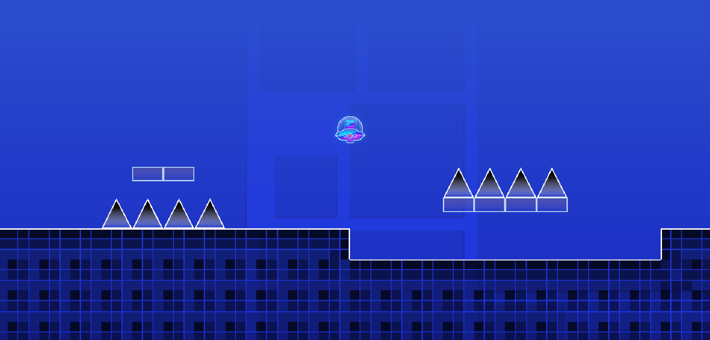
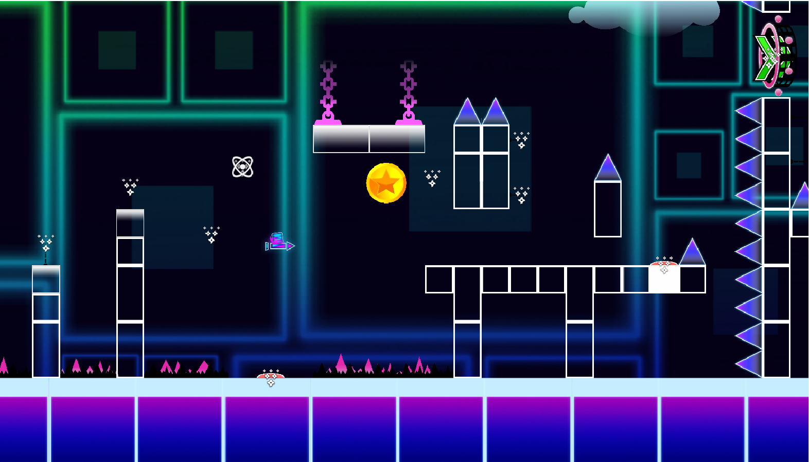

Multiple player pieces
Implemented cube, spaceship, robot, UFO, gear and spider forms with distinct movement behavior.
The remake reproduces the core idea of Geometry Dash: automatic forward movement, precise input timing and obstacle-driven level progression.

Implemented cube, spaceship, robot, UFO, gear and spider forms with distinct movement behavior.
Built the mobile input flow so forms remain responsive on touchscreen devices.
Implemented gravity, size, speed, teleport and other portal behaviors plus jump pads.
Connected player state changes, collisions and gameplay events to visual and audio feedback.

The hardest part was keeping different movement models consistent while still allowing each form to feel unique.